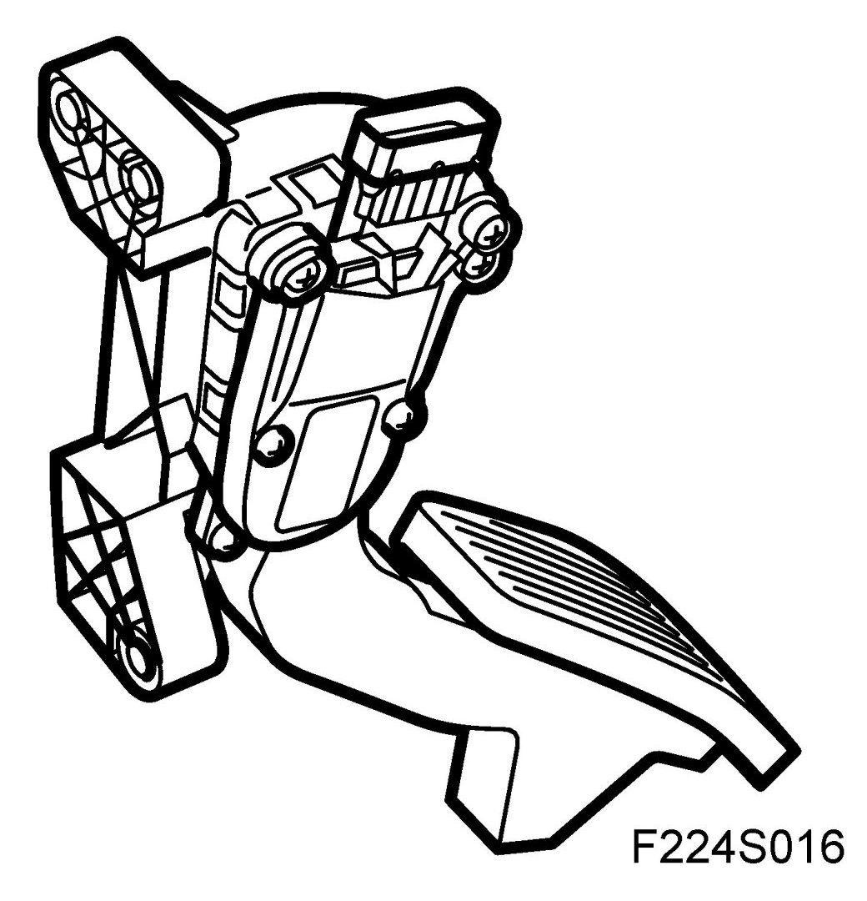
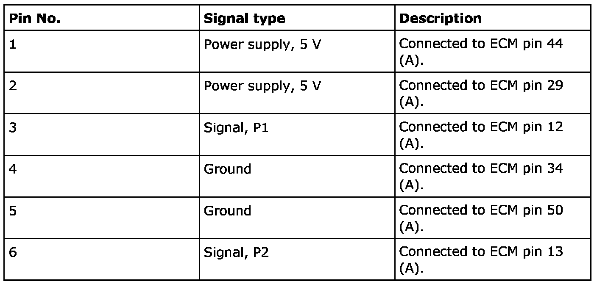
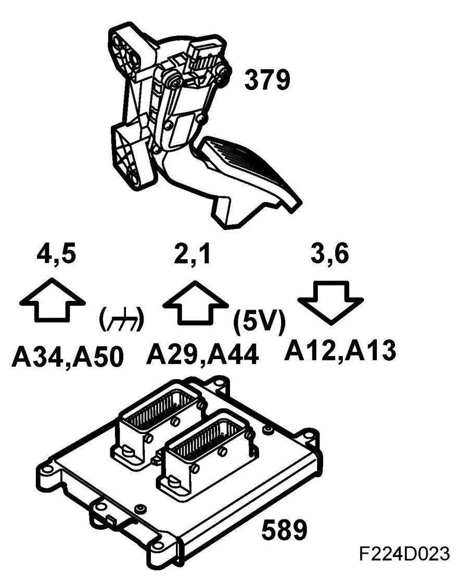
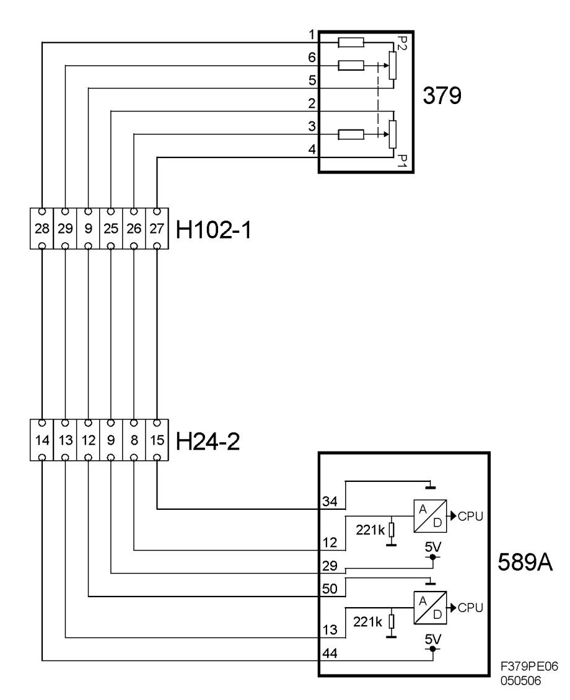

Accelerator Pedal Position Sensor: Description and Operation
Accelerator Pedal Position Sensor (379), T8
Location
Accelerator pedal position sensor (379)
Main task
The task of the position sensor is to translate the driver's request from an accelerator position to instructions the engine control module can understand and process. This is directly affected by the accelerator.
Type
The position sensor houses two potentiometers that vary voltage on the control module sensor inputs based on the position sensor's shaft angle.
The position sensor consists of a resistance track with collector shoes. The collector shoes are mounted on the position sensor shaft and move over the resistance track in relation to the movements of the shaft.
To ensure that information from the position sensor is accurate, there are two different potentiometers. Both are supplied 5 V, but the signal to the control module is always twice as much on P1 as on P2, 0-5 V on the one and 0-2.5 V on the other. This ensures both the function and diagnosis of the position sensor. See the illustration of the inner connections of the sensor.
When idling, voltage on the control module inputs is 1.1 V and 0.55 V respectively.

Connection



Voltage from the sensor varies in relation to the angle of the sensor shaft.